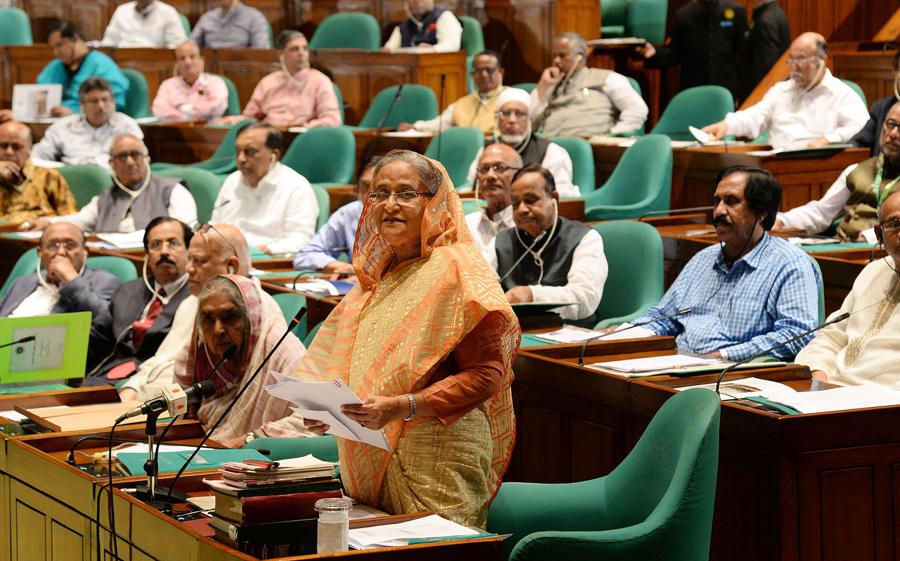
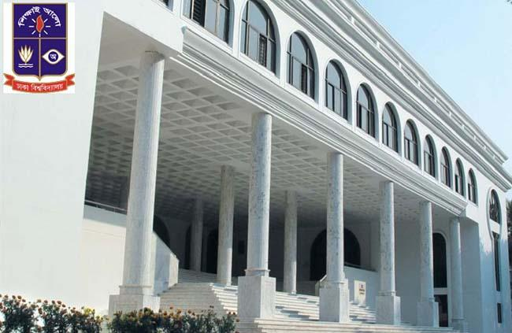
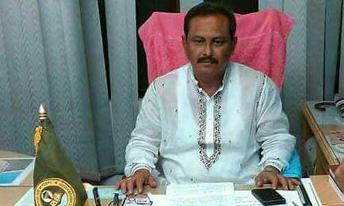
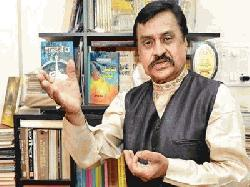

Prime Minister Sheikh Hasina
Prime Minister Sheikh Hasina on Wednesday said the budget for upcoming fiscal 2018-19 was placed thinking the welfare of the people ‘unlikely to the budget of other non-Awami League governments to make fortune of a particular group of people’. “People of Bangladesh had forgotten how to dream. Now they have learned to dream as they have confidence in our economic programme to build up their future,” she said. “The fate of the common people of Bangladesh has really changed as we have taken steps to give the people at all level a decent and economically prosperous life,” the prime minister added, BSS reports. The prime minister was taking part in the discussion on budget for 2018-2019 fiscal placed in the parliament with Speaker Shirin Sharmin Chowdhury in the chair. “It’s an excellent budget on which none could raise any question”, the prime minister said. She congratulated Finance Minister Abul Maal Abdul Muhith for having the opportunity to furnish the budget for ten consecutive times. The prime minister said the size of the budget has been enlarged seven times over the last ten years and the government now has acquired the capacity of implementing ninety percent budget with domestic resources. Terming the projected economic growth rate of 7.78 percent as genuine the prime minister said Bangladesh has been maintaining a steady growth rate over the last few years. Sheikh Hasina said Bangladesh is no more a least developed country (LDC), which was known earlier for all odd things. Bangladesh doesn’t like to live on support of others and as a victorious nation the country should not depend on others for its future prosperity, she said. The prime minister thanked the countrymen and administrative officials of all level for their constant endeavour for implementing the development programmes undertaken by the government for country’s development. Everybody including the government officials and law enforcing agencies worked like a family for implementing our fiscal, social and development programmes, she said adding that Bangladesh is now the 42nd strong economy in the world according to the World Economic Outlook. Laying importance on continuation of the accelerated pace of development the Prime Minister said economic strength of the country was the foundation of the big budget of the country.
The Dhaka University
The Dhaka University authorities on Wednesday announced Tk 741.13crore budget for the fiscal year 2018-19 during its annual senate session with only 4.94 per cent allocation for research. Like the previous years, a big chuck of the budget will be spent for salary and allowances which is Tk 540.35 crore that is 72.91 per cent of the total budget. DU treasurer Prof Kamal Uddin placed the budget in the annual senate session at the Nabab Nawab Ali Chowdhury Senate Bhaban of the university with Vice-Chancellor Professor Akhtaruzzaman in the chair. This year Tk 432.96 crore has been allocated for salary and allowances which is 58.42 per cent of total budget, and Tk 107.40 crore for pensions which is 14.49 per cent of the budget. About Tk 628.31 crore is being sanctioned by the University Grants Commission (UGC) which is 84.78 pc and other Tk 71.38 crore will be collected from the university's internal income sources. The budget will likely to have a deficit of only Tk 41.54 crore, the treasurer told the senate. Professor Kamal also presented a Tk 738.72 crore revised budget for the 2017-18 fiscal. For years, teachers and students have been voicing resentment over the meager budgetary allocation on research and many cited the lack of focus on research as the main reason for Dhaka University not being able to secure a place among the top Asian universities.
Rajshahi City Corporation
Rajshahi City Corporation (RCC) Mayor and BNP-nominated mayor candidate Mosaddek Hossain Bulbul has resigned from the post of mayor. Following the concerned rules, he sent the resignation letter to the local government ministry on Wednesday noon. He will submit nomination papers on Thursday, the last day of submission of nomination papers. Prior to this, nomination papers were collected on Monday. The ministry will appoint a magistrate as the acting mayor by issuing a notification. According to the Election Commission, the nomination papers will be scrutinized on July 1 and 2. The last day of withdrawal of candidacy is July 9 and the vote will be held on 30 July.
Hindu pandit writes in Prophet’s praise
Memorial Sculpture. I could not resist myself reading the lead article. So, this piece is in response to the cover story titled "Battle for a clean Bangladesh", published in Young Observer on June 21, 2018, that introduced me with the volunteer organisation called BD Clean. Everyday, I see people, including my friends, throw garbage on the roads. Littering the pristine roads is a part of their subconscious activity since they don't consider it as their own property that they have to take care of. This awful behaviour makes me tensed. Future will be dark if the people don't take any proper step to stop the unwanted habits. Therefore, BD Clean came across me as a ray of hope. It is really a praiseworthy job that the exceptional community is doing for the sake of a clean Bangladesh. Those young volunteers are setting benchmark around the country. Hopefully, in the near future, their unconditional work will shake the incognizant people and take them in the right direction.
ROUND:37
ID:1244255
E-mail:juitrishadewan@gmail.com
TSP:CCLS//J2EE_ PROGRAMMAR